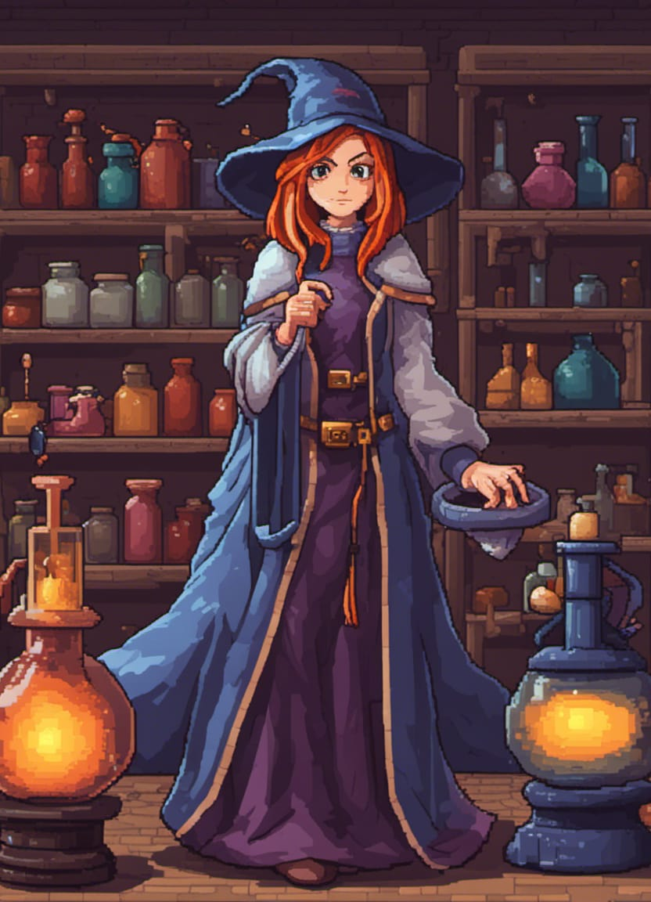
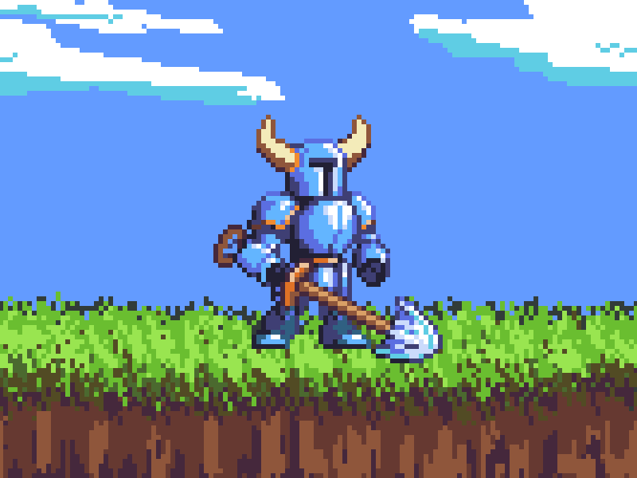
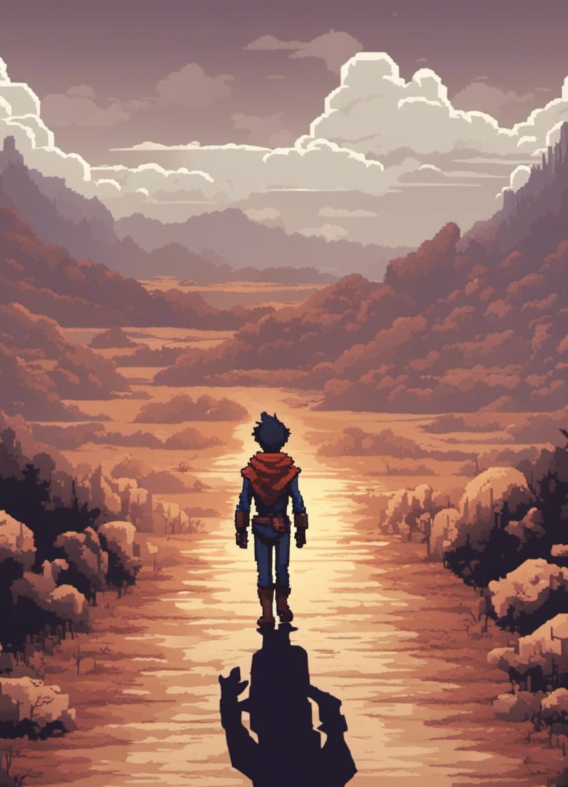

SNES RPG Classics: A Journey Through Time

In the world of video games, the Super Nintendo Entertainment
System (SNES) holds a special place in the hearts of gamers.
Released in the '90s, this legendary console was home to some of
the most iconic RPG games, cherished across generations. Today,
we'll explore a few of these adventures and why they remain
beloved.
One standout is "The Legend of Zelda: A Link to the Past." It
masterfully blended adventure, exploration, and character
growth. Players embarked on a quest to save Hyrule, navigating a
vast open world with various weapons and abilities.
"Final Fantasy VI" is another gem. Its rich, complex narrative
follows a diverse group of heroes battling an evil empire. Known
for deep character development and epic music, it introduced the
Active Time Battle (ATB) system, a mechanic that became a staple
in future Final Fantasy titles.
"Chrono Trigger" is often considered a masterpiece. Created by a
dream team, it followed Crono and friends through time and space
to prevent a catastrophic future. Its unique time-travel system
allowed players to explore different eras, making it
groundbreaking.
"Secret of Mana" offered a distinctive experience with real-time
combat and multiplayer. Players journeyed to restore peace in a
world plagued by an evil empire, accompanied by fantastic music
and charming graphics.
In summary, SNES RPG classics hold a special place in gamers'
hearts. These adventures, known for memorable characters, epic
stories, and innovative gameplay, captivate generations. If you
haven't explored these classics, now is the time to discover why
they're beloved. The SNES continues to deliver timeless RPG
adventures worth experiencing again and again.
The Timeless Beauty of Pixel Art

In the vast landscape of digital art, one medium stands out for
its unique charm and enduring appeal: pixel art. This form of
digital art has been around for decades and has retained its
popularity and relevance in an era of high-definition graphics
and sophisticated 3D rendering. In today's blog post, we'll
explore the captivating world of pixel art, its history, and why
it continues to captivate artists and gamers alike.
A Brief History of Pixel Art
Pixel art traces its origins back to the early days of computing
when graphical displays had limited resolution and color
capabilities. In these early systems, images were created by
arranging individual pixels, the smallest unit of a digital
image. Pioneering video games like "Pong" and "Space Invaders"
relied on pixel art due to the technological constraints of the
time.
As technology advanced, pixel art evolved alongside it. The
8-bit and 16-bit eras of gaming, characterized by consoles like
the Nintendo Entertainment System (NES) and Super Nintendo
(SNES), saw pixel art reach new heights. Games like "Super Mario
Bros." and "The Legend of Zelda" demonstrated the potential for
rich storytelling and creativity within the pixelated confines
of the screen.
The Timeless Appeal of Pixel Art
What makes pixel art so enduringly popular? Here are a few
reasons:
-
Nostalgia: For many, pixel art invokes a
sense of nostalgia, harkening back to the golden age of video
games. It's a reminder of simpler times when gameplay and
imagination took precedence over cutting-edge graphics.
-
Simplicity: The minimalist nature of pixel
art forces artists to convey complex ideas and emotions with
limited resources. This constraint often leads to creative and
innovative solutions.
-
Accessibility: Pixel art is accessible to
both seasoned artists and beginners. Its simplicity means that
aspiring artists can quickly learn the basics and start
creating.
-
Unique Aesthetic: The deliberate, blocky
nature of pixel art imparts a unique aesthetic that can be
both charming and visually striking. Each pixel is placed with
care, making every piece of pixel art a labor of love.
The Revival of Pixel Art
In recent years, pixel art has experienced a resurgence in
popularity, thanks in part to the indie gaming scene. Titles
like "Stardew Valley," "Undertale," and "Hollow Knight" have
proven that pixel art can be used to create immersive and
emotionally resonant gaming experiences. Indie developers have
embraced pixel art for its nostalgic value and
cost-effectiveness, allowing them to focus on gameplay and
storytelling.
Beyond gaming, pixel art has found a home in various creative
endeavors, from animations and web design to pixel art galleries
and social media. Platforms like Instagram and Twitter have
become showcases for pixel artists to share their work and
connect with a global community of enthusiasts.
In Conclusion
Pixel art is more than just a pixelated throwback to the past;
it's a vibrant and enduring form of digital expression. Its
nostalgic appeal, simplicity, accessibility, and unique
aesthetic continue to attract both creators and admirers. As
technology advances, pixel art stands as a testament to the
enduring power of artistic creativity and the timeless beauty of
simplicity in the digital age. Whether you're a seasoned pixel
artist or someone curious to explore this medium, pixel art
invites you to pixelate your imagination and create something
truly captivating.
More on Pixel Art
The Hero's Journey: A Timeless Narrative Blueprint

The Hero's Journey is a powerful and timeless storytelling
framework that has shaped countless epic tales throughout
history. This narrative concept, popularized by Joseph Campbell,
outlines the hero's path of transformation, self-discovery,
and triumph over adversity.
At its core, the Hero's Journey consists of three main
stages:
-
Departure: The hero departs from their
ordinary world, often in response to a call to adventure. They
may face initial reluctance but eventually accept the
challenge.
-
Initiation: This is the heart of the journey,
where the hero faces trials, meets allies and mentors, and
confronts the ultimate ordeal. They emerge transformed, having
gained knowledge, skills, and a deeper understanding of
themselves.
-
Return: The hero returns to their ordinary
world, now changed and equipped to bring about positive
change. They may face one final test before achieving a new
level of enlightenment.
Countless iconic stories, from "The Odyssey" to "Star Wars,"
have followed this narrative blueprint. It resonates because it
mirrors our own human journey of growth, resilience, and
self-discovery. Whether in literature, film, or real-life
adventures, the Hero's Journey continues to captivate and
inspire audiences worldwide, making it an enduring narrative
concept in storytelling.